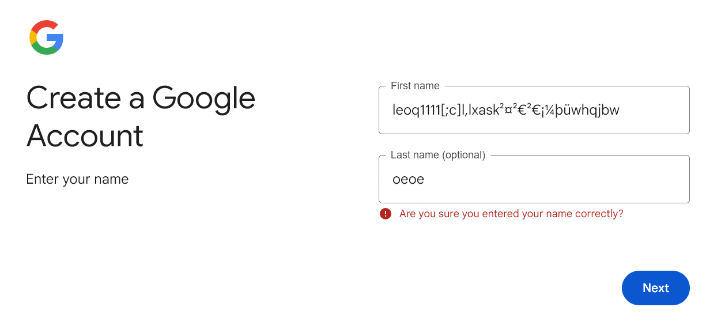
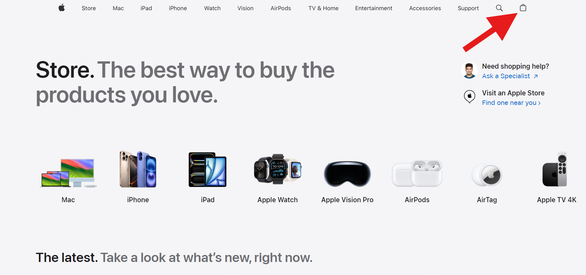
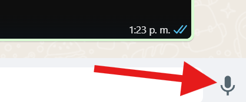
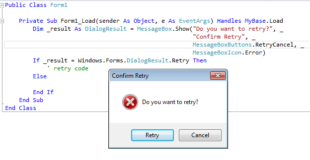
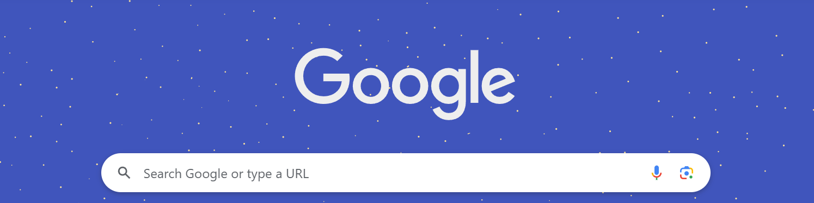
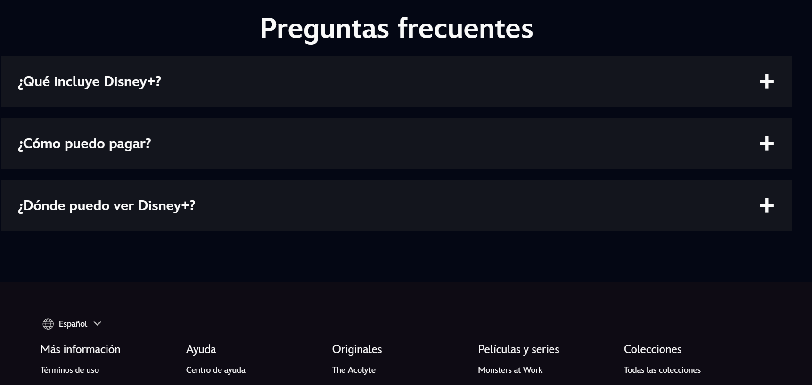

Según Coppola (2023), la usabilidad de un sitio web se refiere a las propiedades
que permiten que los usuarios tengan una experiencia de navegación placentera.
Estas propiedades incluyen aspectos como el diseño visual del sitio,
la elección de colores y cómo se organiza la información en la página.
Este proceso empieza desde que el usuario entra al sitio y toma en consideración la velocidad de carga;
la logística del menú y sus secciones; el diseño y la organización de los elementos gráficos;
que las páginas no muestren errores; la optimización de los textos, funcionamiento de los chats,
los formularios, la barra de navegación, botones y demás elementos. (Coppola, 2023, párr. 4)
Importancia y ventajas
La usabilidad web ofrece numerosas ventajas que pueden ser muy beneficiosas para nuestros sitios,
ayudando a alcanzar nuestras metas.
VENTAJAS
Cuando un sitio web presenta las características necesarias para ofrecer
una buena usabilidad, se disminuye la probabilidad de que los usuarios decidan abandonarlo.
Esto se debe a que una experiencia de navegación fluida y eficiente mantiene a los visitantes
interesados y comprometidos con el contenido.
La posibilidad de atraer nuevos clientes aumenta considerablemente,
ya que la primera impresión que un posible cliente tiene de tu empresa suele
estar basada en su experiencia al navegar por tu sitio web.
Un diseño bien optimizado y fácil de usar transmite una imagen profesional y confiable.
Una buena usabilidad web mejora la experiencia del usuario y refuerza
la imagen de la empresa. Al facilitar una navegación de calidad,
una empresa puede destacarse entre los visitantes, aumentando su reconocimiento.
Esto puede traducirse en una mayor lealtad y reputación positiva.
El principio de Jakob Nielsen subraya la importancia de mantener a los usuarios constantemente informados sobre el estado del sistema.
Esto les permite conocer el resultado de sus acciones previas y las decisiones que deben tomar a continuación,
mejorando así su experiencia y satisfacción en la navegación.
Esto implica que cada acción que realice el usuario debe ir acompañada de información
visual que respalde la respuesta del sistema. De este modo,
se minimiza la incertidumbre del usuario y se mejora su experiencia al interactuar con el sistema.
Un ejemplo completo de una buena aplicación de esta regla lo encontramos cuando abrimos una cuenta en Google:

Estos mensajes ayudan al usuario a entender que el sistema está funcionando, o si se ha producido algún error.
Nosotros como desarrolladores web, es fundamental no asumir que nuestros conocimientos
e interpretaciones de objetos o palabras coinciden con los de los usuarios.
La manera en que cada persona interpreta la información varia muchisimo,
lo que genera diferencias en la comprensión
Este principio da a entender que los sistemas deben estar diseñados de manera
que utilicen un lenguaje que sea familiar para los usuarios,
en lugar de emplear términos técnicos.
Esto facilita la comprensión y la interacción,
haciendo que la experiencia del usuario sea más intuitiva y accesible.
Un ejemplo de esta regla se puede observar en el sitio web de Apple,
que utiliza iconos visuales como el de una bolsa de compras.
Este elemento sugiere que al hacer clic en él, el usuario puede adquirir productos,
lo que les resulta familiar. Este diseño simula la experiencia de una compra en una tienda física,
facilitando la interacción del usuario con el sitio.

El ícono de bolsa de compras simula la experiencia de
comprar en una tienda física y elegir productos
Es muy normal que los usuarios cometan errores, por lo que es importante ofrecerles
la opción de cancelar o retroceder después de cada acción. Brindar esta posibilidad
no solo aumenta la confianza del usuario en el sistema, sino que también les otorga una
sensación de libertad en su navegación.
Los de apple tienen una funcio para deshacer el texto con solo agitar el telefono
La opción de deshacer llega a ser muy útil en caso de que
el texto digitado haya sido accidental
Los usuarios ya tienen una idea clara de lo que esperan encontrar al visitar un sitio web.
La cuarta ley de Nielsen sostiene que no deberían tener que aprender algo nuevo cada vez que acceden
a un sitio diferente. En lugar de innovar, los sitios web deben seguir convenciones
establecidas que faciliten la navegación y brinden una experiencia familiar.
Esto asegura que la interacción sea intuitiva y sencilla para los usuarios.
Un ejemplo basico y muy comun es el signo de un microfono, en la mayoria de sitios donde
permita grabar audios o buscar por voz se sabe que ese es el icono.

El microfono en WhatsApp que implementa la cuarta ley de Nielsen
Los mensajes de error son de suma importancia, pero los sistemas deberían ser capaces de prevenir
esos errores desde el inicio. La importancia de esto varía según la acción que se esté llevando a cabo.
El objetivo principal de este principio es eliminar las situaciones que podrían causar
problemas desde el inicio y de ofrecer a los usuarios ventanas de confirmación antes
de realizar acciones. Por ejemplo, cuando intentamos acceder a un sitio no seguro,
el navegador nos advierte antes de continuar. Esto ayuda a prevenir errores y mejora
la seguridad del usuario.
Mensaje de error antes de ingresar a un sitio web no seguro
Para los usuarios, es más sencillo reconocer información que aprenderla o recordarla.
Esto sugiere que al reducir la carga cognitiva del usuario, su experiencia de navegación
se vuelve más satisfactoria. Además, los usuarios no deberían tener que recordar información
de un sitio web a otro, lo que implica que cada interfaz debería ser intuitiva y coherente.
De lo que habla la sexta regla, es que un sistema debe de ser lo más intuitivo posible,
para así evitar que el usuario piense de más al querer realizar una acción
La direccion a la que apuntan las flechas nos ayudan a entender que significa
Es dificil saber que tipo de usuario se verá atraído por tu sitio web,
por lo que no podemos asumir que será un novato en la navegación web
ni que tampoco será un usuario experto, por lo que el sistema deberá estar preparado para
adaptarse a ellos y brindarles diferentes formas de cumplir sus objetivos
dentro del sitio web.
Un ejemplo de este principio son las ventanas emergentes, las cuáles tienen distintas maneras de
cerrarse, ya sea tocando fuera de la ventana, usando las tecla "ESC", o simplemente tocando el boton "Entendido",
o en la equis que generalmente se encuenra en la parte superior.

Las ventanas emergentes generalmente siempre tienen multiples formas de ser cerradas
Las interfaces deben evitar incluir información irrelevante o poco necesaria,
ya que esto puede distraer y competir visualmente con los elementos esenciales
de la funcionalidad. Mantener un diseño limpio y centrado en el contenido relevante
es fundamental para facilitar una experiencia de usuario fluida y efectiva.
Este principio tampoco sugiere un diseño completamente plano,
si no que exista un equilibrio entre la información presentada y la necesaria. El mejor ejemplo
de este principio es el buscador de Google.

El navegador de Google contiene la información necesaria que un buscador necesita.
Esta regla complementa la quinta,
enfocándose en los errores que ocurren cuando no se logran prevenir.
Según Nielsen, lo primero que se debe hacer,
es informarle al usuario cual ha sido el error de manera clara y simple,
presentándose con información visual que ayude a reconocer el problema,
como por ejemplo si el usuario introduce un texto para buscar con faltas de ortografía
u otros errores sintácticos
El mensaje sugiere informa de forma clara y simple que el texto está incorrecto
La regla número 10 habla de la importancia de facilitar al usuario la solución
de problemas sin que tenga que contactar al servicio al cliente.
Esto implica proporcionar recursos como guías, preguntas frecuentes y tutoriales dentro del sitio web.
Esta asistencia puede ofrecerse a través de tutoriales o mediante información
fácilmente accesible en el sitio web. Un ejemplo es la pagina de Disney+

El espacio de ayuda y documentación autónoma de Disney+ es de gran ayuda para usuarios inexpertos en las plataformas de streaming